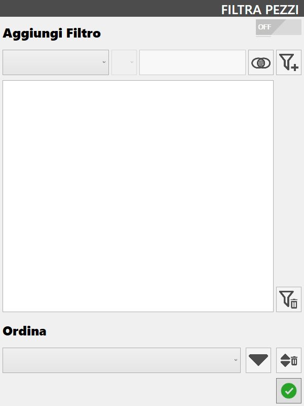
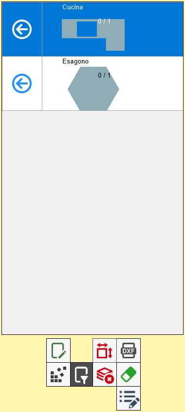
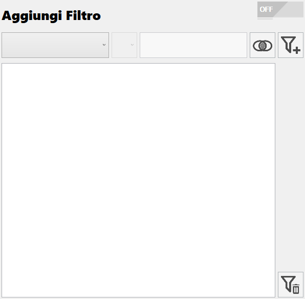
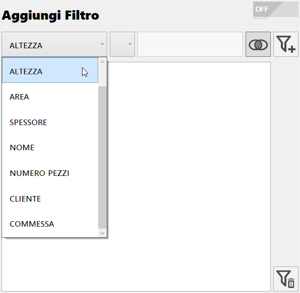
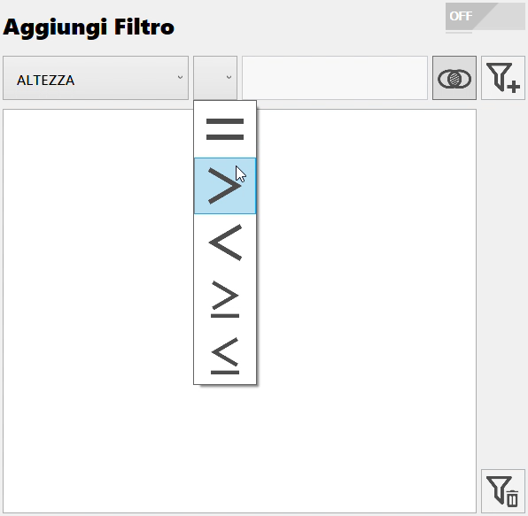
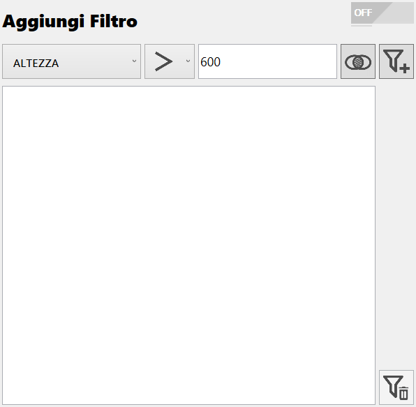
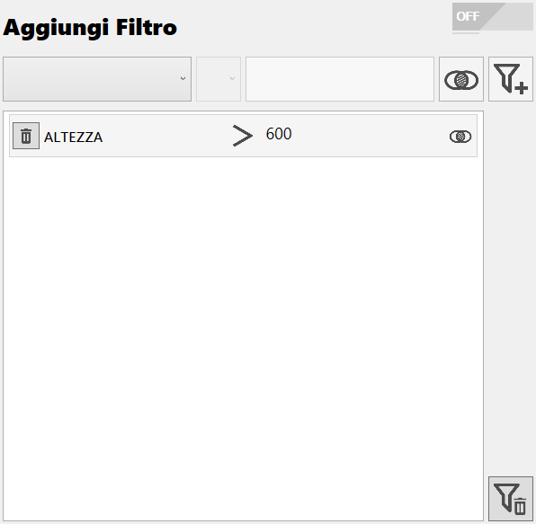
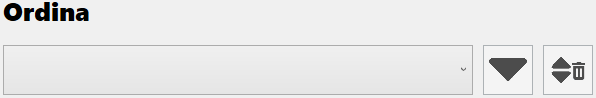
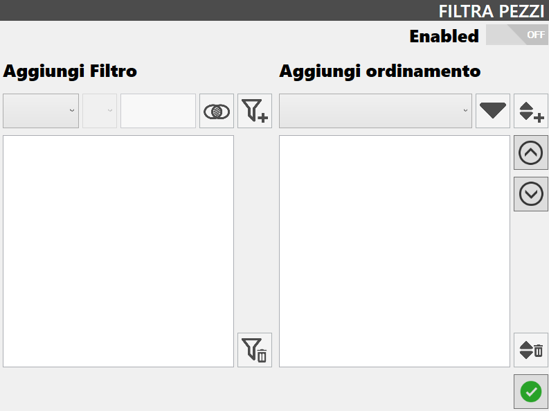
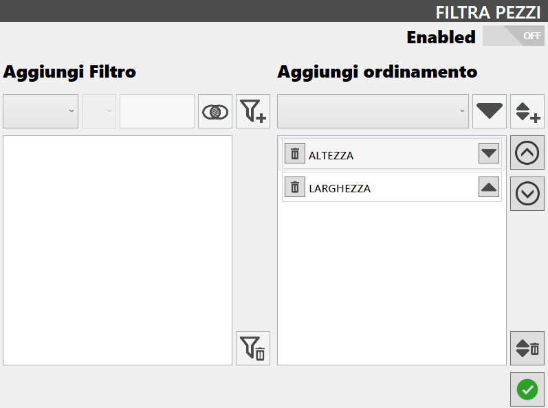

This function allows the operator to apply a filter and/or order the pieces of the list.
At the pressure of the button will open the following window.

List of filtered pieces
Once that criteria have been set to filter or order pieces, they can be applied using the button that is located on the top right.
 | Activate/Deactivate |
The pieces that do not match the criteria chosen for the filter, will not be shown in the pieces list.
ATTENTION!The pieces present on the working area that do not satisfy the criteria established by the filter will be removed.
In the following example, it wants to show only the pieces having height greater than 600 mm, and to arrange them in increasing alphabetical order.
Prima di applicare il filtro e l’ordinamento | Dopo aver applicato il filtro e l’ordinamento |
 |  |
The function of filter and sorting not work with the commercial pieces.The filter and sorting criteria will be respected also by the nesting functionality.
Filter Pieces
In the upper section of this window, the operator can choose to add a filter based on different features of the pieces.

As it can be seen, can be found the following buttons.
  | Application mode of the 'Exclusion' filter |
Add Filter | |
Delete filters |
How to create a filter
To create a filter, choose from the first drop-down menu on the left the property to be used among those proposed.

Once the discriminant characteristic is decided, select a relational operator from the second menu.

Subsequently, insert a suitable value for the property in the box next to create a logical condition.

At this moment, through the button on the right of the text box, it is decided how the filter that is being created will interact with the other filters of the list, if present.
NOTEIn mode 'Exclusion', a piece must satisfy simultaneously the logic condition that is about to be created and the result of the previous one.In mode 'Inclusion', a piece must satisfy the condition that is about to be created or the result of the previous one.
To complete the creation of the filter, use the last button located on this row. The filter will be added to the list below.

Order Pieces
In the lower section of the window, the operator can decide to order the pieces based on some properties.

After having selected a voice between those proposed in the drop-down menu, you will be able to perform the following actions:
 | Ascending/Descending order |
 | Delete sort |
Multiple Sorting (Optional)
This function makes possible to order the pieces of the list using more than a criteria.

With this mode, it is possible to add sorting criteria using the following buttons:
Add sort criterion sort | |
Change position |
NOTEThe criteria contained in this list are respected from top to bottom.That means the pieces are ordered according to the first criterion. If two or more pieces possess the same value for the property connected to the first criterion, they will be ordered according to the next criterion. And so on for each criterion of the list.
In the following image is shown an example of multiple arrangement.
